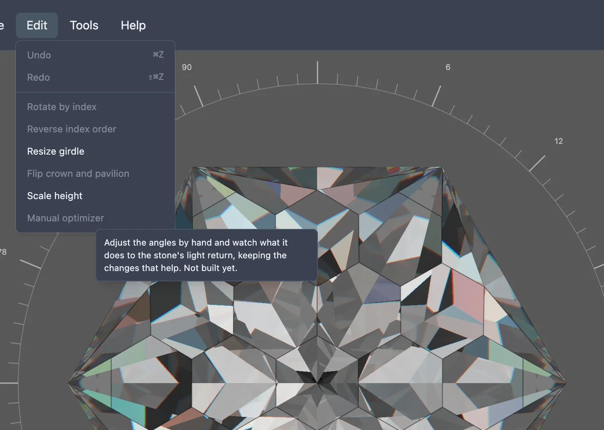

This feature is still being built. The menu item below exists, but choosing it does nothing yet.
Getting the most brightness and fire out of a cut usually means nudging a facet's angle a little, checking the render, and nudging again — the kind of hand-tuning a faceter does by eye rather than from a fixed formula. A manual optimizer would let you adjust a design's angles this way directly against the render, so you could see what each small change does to the stone's light return and keep whichever changes actually help.
None of that is built yet. In the studio's Edit menu, an item named Manual optimizer is already there, but it is greyed out and does nothing when clicked. Hovering it shows a tooltip describing what it is meant to do, ending "Not built yet."
